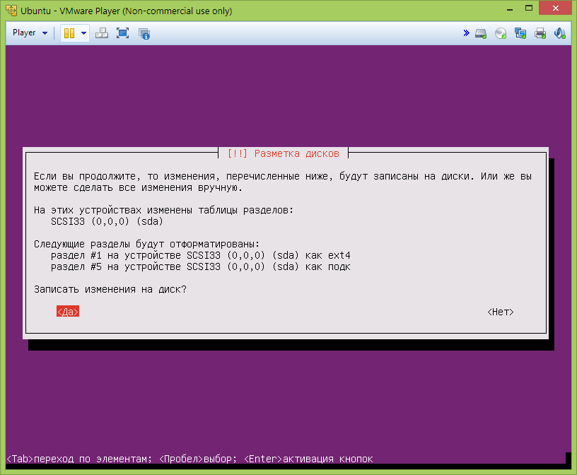
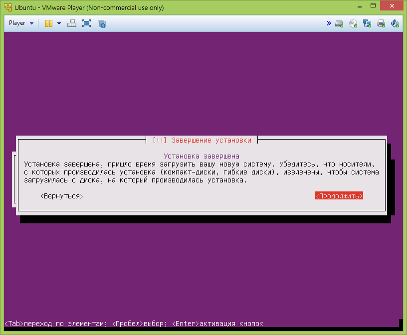

Подготовка
Разумеется, если у вас дома стоит уже какая-нибудь версия Linux или Mac OS, то никаких виртуалок заводить
не нужно, все необходимое для полноценной работы в консоли уже есть.
Для установки новой виртуальной машины с Linux нам потребуется:
- Сама программа для запуска виртуальных машин.
Для этой цели нам отлично подходит Vmware Player.
Хоть продукт и стоит денег, но для домашнего пользования является бесплатным. Можно, конечно, вместо
Vmware Player использовать VM VirtualBox, но
данная программа все же уступает в производительности Vmware Player.
- Установочный образ Ubuntu Linux.
Скачиваем отсюда образ для
установки. Нам отлично подойдет Ubuntu 13.10 "Saucy Salamander" Minimal CD 30MB. Образ весит так мало,
потому что содержит в себе базовые файлы для установки, а все остальное мы скачаем уже по ходу процесса.
Разумеется, вы можете скачать с ubuntu.com полноценные образы и процесс самой установки, в принципе,
отличаться не должен от приведенной ниже инструкции.
Предположим, что образ с Linux загружен, Vmware Player установлен. Запускаем программу и начинаем процесс
создания новой виртуальной машины.
Нажимаем справа в окне "Create a New Virtual Machine" и в появившемся диалоге указываем путь к образу с
Ubuntu, который мы скачали.
Указываем тип гостевой системы: Linux, а в "Version" выбираем просто "Ubuntu":
Здесь мы можем задать имя новой виртуальной машины, например, "Ubuntu" и указать, где должны храниться
ее файлы.
Теперь нам нужно указать, какой максимальный размер диска будет у виртуальной машины. Я указал 20 гб.
Но это не значит, что сразу "скушается" 20 гигабайт: виртуальная машина будет увеличивать свой размер по
мере необходимости, но не может превысить указанный лимит.
Финальный процесс создания виртуальной машины. Кстати, мы можем подравить некоторые ее характеристики, нажав
"Customize Hardware" (об этом ниже):
Здесь мы можем отключить (сняв галочку Connect at power on) принтер и звуковую карту (разумеется, тоже
виртуальные):
И заодно сразу настроим возможность общего доступа к файлам на вашем компьютере. Для этого перейдем на
вкладку "Options" в настройках виртуальной машины и включим Shared Folders (переключить в Always Enabled).
Также нужно настроить, какие папки будут общими. Для этого нужно нажать кнопку Add и указать нужную папку
(можно создать новую или указать существующую):
Включаем шару. Делать ее только для чтения не нужно:
Установка Ubuntu Linux
Сразу хочу обратить внимание, что я привожу не все скриншоты установки, а только ключевые, где требуется
какое-либо действие от пользователя. Кстати, если кликнуть мышкой в работающую виртуальную машину, то она
будет перехватывать все ваши нажатия на клавиатуре или мышке. Чтобы переключиться из виртуалки в вашу
систему, нужно нажать Ctrl+Alt.
Выбираем в окне слева нашу виртуальную машину и нажимаем зеленую кнопку "Play" сверху, после чего запустится
процесс установки. Выбираем "Install":
Первым делом, нужно выбрать язык, который будет использоваться как в процессе установки, так и в самой
системе. Людям, которые сталкиваются с Linux впервые, рекомендуется выбрать русский язык.
Указываем наше местонахождение:
Теперь определяем раскладку клавиатуры. Здесь выбираем "нет":
Указываем страну для раскладки, здесь это непринципиально, но от выбора зависит дальнейшее определение
раскладки. Выбираем "Украинская":

И тип раскладки. Вводить украинские буквы нам, скорее всего, не понадобится, поэтому выбираем "Русская":
Теперь необходимо указать сочетание клавиш для смены раскладки. Можно выбрать наиболее привычную для себя
комбинацию:
Вводим имя компьютера. В принципе, не сильно на что-то влияет, поэтому вводите, что вам хочется:
Далее нужно выбрать источник для скачивания всяких программ и установочных пакетов, выбираем "Украина", чтобы
скачивалось быстрее:
Здесь оставляем все как есть:
И здесь тоже:
Начинается процесс установки, он длится от 15 до 40 минут, в зависимости от скорости вашего интернета:
установщик определит доступные пакеты, начнет загрузку базовых компонент.
После будет предложено ввести имя пользователя. Здесь можете написать свои имя и фамилию или что захотите:

А вот здесь нужно ввести имя (логин), с которым будет осуществляться вход в систему, так будет называться домашний
каталог и от этого имени будут запускаться процессы.
Далее будет предложено ввести пароль для учетной записи и его подтверждение. Ввести можно любой простой
пароль, который будет не трудно запомнить. Разумеется, так не стоит делать в боевых условиях: простой пароль
можно подобрать и злоумышленник получит доступ к системе, но в случае с нашей тестовой виртуалкой,
не страшно. Ниже будет описано, как восстановить пароль, если вы его забудете или совершите ошибку в его
наборе.
Если вы все-таки решили ввести простой пароль, будет предупреждение, с которым можно будет согласиться:
Шифровать домашний каталог нам не нужно:
Теперь процесс создания нового диска. Здесь все оставляем, как есть и записываем изменения на диск:

Далее начнется установка системы:

Здесь установщик поинтересуется, как устанавливать критические обновления. Оставляем как есть:

А теперь мы можем выбрать, какие программы и компоненты должны быть установлены в системе. Для нас достаточно
первых двух пунктов. Загрузка и установка тоже займет какое-то время:
Устанавливаем системный загрузчик в главную загрузочную запись:
Здесь соглашаемся:
Финальный этап установки, просто жмем "Продолжить":

Жизнь в новой виртуальной машине.
После перезагрузки мы можем войти в новую систему. Введите то, что указали при установке:
Если вы не ошиблись в вводе имени пользователя или пароля, то будет показано приветствие:
Теперь можно приступить к установке программ. В Ubuntu Linux существуют два менеджера пакетов:
aptitude и apt-get. Синтаксис у них практически одинаковый, но aptitude лучше работает с
зависимостями (это когда одна программа требует установку других программ или библиотек). Выполнять
установку программ можно только с правами суперпользователя; мы такими правами обладаем, поэтому достаточно
об этом сообщить — написав sudo перед командой, которую хотим выполнить. Обратите внимание, что
запуск sudo потребует ввод вашего пароля.
Итак, давайте поставим несколько программ, которые нам пригодятся в дальнейшем. Для этого наберем
в консоли и запустим:
sudo aptitude install build-essential nginx nodejs npm
- build-essential — комплекс программ и библиотек, необходимых для компилирования исходных кодов в
исполняемые файлы;
- nginx — очень мощный и быстрый веб-сервер;
- nodejs — окружение для серверной разработки на языке JavaScript;
- npm — менеджер пакетов. Как aptitude, только для nodejs.
Соглашаемся:
Кстати, как выключить или перезагрузить виртуалку? Все очень просто — выключается так:
sudo halt
А перезагружается так:
sudo reboot
Помните, мы в самом начале указывали, какие папки будут использоваться для общего доступа? Так вот, это еще
не все. Фактически, у нас два пути: поставить дополнительные компоненты виртуальной машины или поставить
файловый сервер Samba, провозившись с правкой конфигурационных файлов. Пожалуй, выберем первое.
Инициализируем установку:
Может ругнуться на то, что в виртуальной машине уже подключен другой диск. Жмем "Yes":
И это еще не все. Теперь нам необходимо примонтировать наш виртуальный диск к системе. Для начала создадим
папку, куда примонтируем наш диск:
sudo mkdir /media/cdrom
А теперь примонтируем:
sudo mkdir /media/cdrom
Как видите, нам и здесь понадобилось запустить команды с правами суперпользователя. А все потому, что мы
решили создать новую папку в директории, которая принадлежит не нам. Ну и монтировать диски может только
суперпользователь.
Распакуем архив с диска в нашу домашнюю папку и запустим установку. Если вы не в домашней директории, просто
выполните в консоли cd.
tar -zxf /media/cdrom/VMwareTools-9.6.1-1378637.tar.gz
tar — это такая консольная программа для работы с архивами. Не исключено, что имя архива у вас может
отличаться, поэтому я рекомендую набрать
tar -zxf /media/cdrom/VM
и нажать кнопку tab, после
чего подставится правильное имя архива.
Если вы все сделали правильно, то в вашей домашней директории
должна появиться папка vmware-tools-distrib, можем даже изучить ее содержимое, для этого достаточно
набрать
ln -s vmware-tools-distrib
Про tab помните?
Можно запускать установку. Для этого выполним
./vmware-tools-distrib/vmware-install.pl
Точка в начале говорит о том, что файл нужно запустить.
На вопросы установщика можно просто нажимать Enter. Единственный момент, это можно не ставить поддержку
drag-n-drop, потому что она нам не понадобится. Но опять же, можно не заморачиваться.
Если установка прошла успешно (по идее, никаких сюрпризов быть не должно), то вам становится доступной та
самая общая папка, которую мы указали в самом начале. Все папки, которые вы будете задавать в настройках
шары, внутри виртуальной машины будут доступны по пути /mnt/hgfs. Проверим:
ls -la /mnt/hgfs
Вы должны увидеть имя папки, в моем случае, это projects. Давайте еще для удобства сделаем ссылку на
эту папку, чтобы можно было быстро к ней обращаться из домашней директории:
ln -s /mnt/hgfs/projects
Ну и проверим, создалась ли ссылка:
ls -la
Результат наших стараний:
Давайте убедимся, что мы можем не только видеть нашу общую папку, но еще и создавать там новые файлы и
папки:
touch projects/index.html
Команда touch создает пустой файл с указанным именем.
Проверим, создался ли файл. Для этого в
оригинальной системе откроем нашу общую папку. Как видите, мы можем не только читать, но и писать:
Вот и все. Мы создали новую виртуальную машину, затем установили на нее Linux, поставили программы и
научили работать систему с общими папками. Напоследок, включим возможность входа в систему без пароля. Для
этого нам нужно отредактировать один конфигурационный файл. Для этого выполним:
sudo vim /etc/init/tty1.conf
vim — хоть и не простой, но очень мощный консольный текстовый редактор. Сперва нам нужно перейти
в режим правки, для этого нажмите a, удалите последнуюю строчку, а затем наберите там
exec /bin/login -f ubuntu < /dev/tty1 > /dev/tty1 2>&1
где вместо "ubuntu" введите то имя пользователя (логин), которое задали при установке. Убедитесь, что все
ввели правильно, перед тем, как сохраниться. А чтобы сохраниться, нужно сначала нажать Esc, затем
набрать :wq и нажать Enter. Если вы случайно стерли не то или произошло еще что-нибудь
странное, то нужно сделать так же, как и при сохранении, только в конце написать восклицательный знак и
тогда файл не сохранится. А если все сделано правильно, то после перезагрузки вводить пароль
не прийдется.
Восстановление забытого пароля.
При запуске виртуальной машины необходимо зажать кнопку Ctrl. Должен появиться такой диалог, где
нужно выбрать второй пункт:
А потом еще раз второй пункт:
В новом диалоге выбираем Перейти в командный интерпретатор суперпользователя:
Итак, нам доступна консоль. Примонтируем файловую систему:
mount -rw -o remount /
А теперь поменяем пароль:
passwd ubuntu
Где вместо ubuntu вы вводите свой логин. Будет предложено дваджы ввести новый пароль, а затем можно
перезагрузиться и войти как обычно, под своим пользователем.